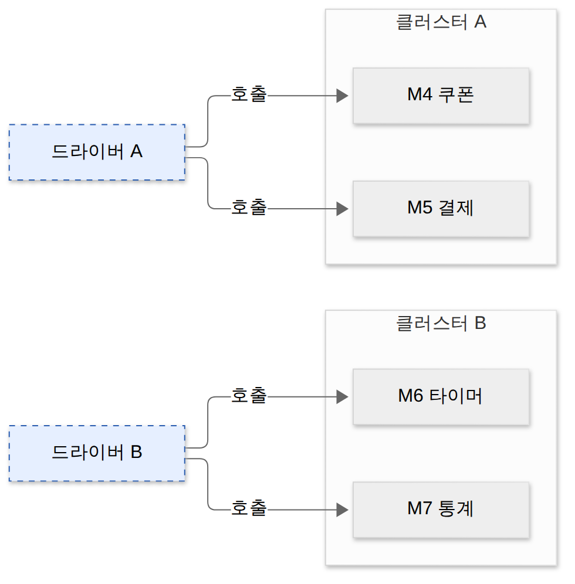
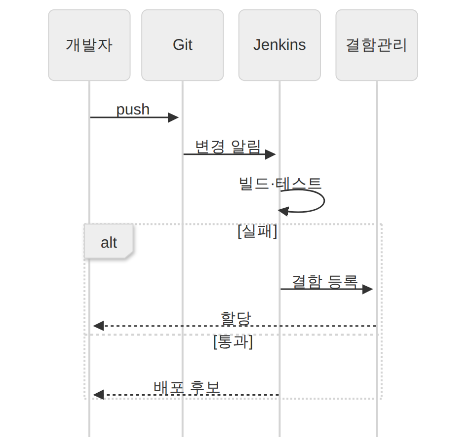
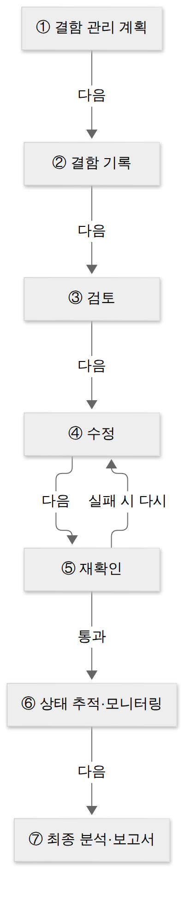
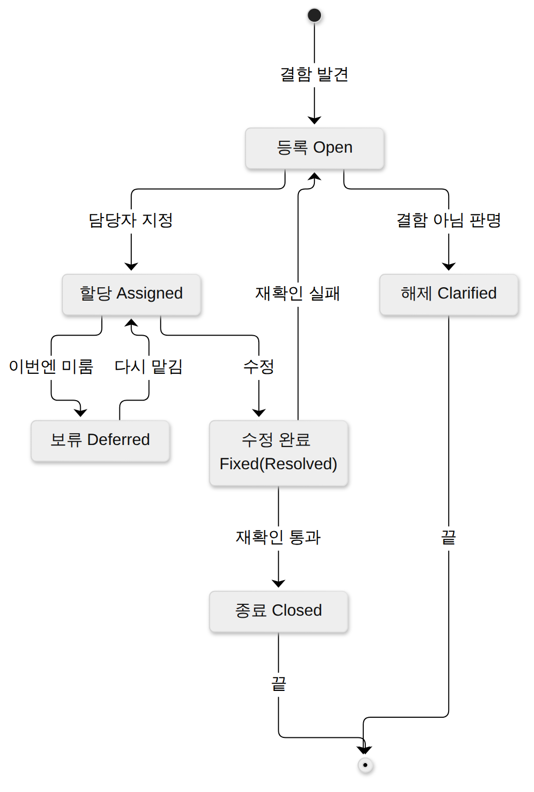
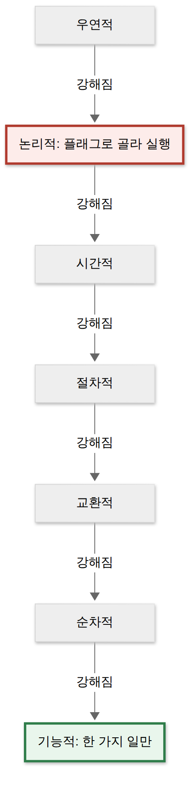

D026 · 통합 테스트 방식·테스트 하네스·자동화 도구·결함 관리
A8 A8 둘째 날이에요. 어제 D025에서 테스트 레벨을 단위 → 통합 → 시스템 → 인수로 나눴죠. 오늘은 그중 통합 칸을 확대해서 들어가요. 모듈을 어떤 순서로 붙이는지, 붙이는 동안 무엇이 테스트를 받쳐 주는지, 반복 실행을 누가 맡는지, 그리고 찾아낸 결함을 어떻게 끝까지 처리하는지를 봐요. 사례는 어제와 같은 스터디캠 v1.1(유료 플랜·쿠폰 결제 추가)이에요.
- 통합 테스트 방식(빅뱅·하향식·상향식·샌드위치)과 각 방식이 쓰는 대역(스텁·드라이버)을 짝지을 수 있다
- 테스트 하네스 구성요소를 구별할 수 있다
- 테스트 자동화 도구 4유형(정적 분석·테스트 실행·성능 테스트·테스트 통제)을 구별할 수 있다
- 결함 관리 프로세스와 결함 상태(Open → Assigned → Fixed → Closed, Deferred·Clarified)를 설명할 수 있다
1. 큰 그림 — 각자 맞는데 붙이면 틀린다
단위 테스트는 모듈 하나를 떼어 내서 안쪽 로직만 봐요. 그래서 모든 모듈이 단위 테스트를 통과해도, 서로 주고받는 값의 단위·형식·호출 순서가 어긋나면 붙이는 순간 문제가 터져요. 각자 자기 파트는 완벽하게 연습해 온 밴드가 첫 합주에서 서로 키가 다르다는 걸 알게 되는 순간, 그게 통합 테스트가 잡으려는 결함이에요.
통합 테스트는 단위 테스트가 끝난 모듈을 결합해 가면서, 모듈 간 인터페이스와 상호 작용에서 생기는 오류·결함을 찾는 테스트예요. 아래 스터디캠 예에서 구매 모듈은 금액 9900을 “원” 단위로 보내고, 결제 모듈은 같은 숫자를 “천 원” 단위로 읽어요. 둘 다 혼자서는 멀쩡하지만 붙이면 990만 원이 청구돼요.
이런 결함을 체계적으로 잡으려면 네 가지를 정해야 해요. 모듈을 어떤 순서로 붙일지(통합 방식), 아직 없는 모듈 자리를 무엇으로 채우고 받칠지(테스트 하네스), 같은 테스트를 매번 누가 돌릴지(자동화 도구), 찾아낸 결함을 어떻게 끝까지 처리할지(결함 관리)예요. 오늘 섹션 순서가 바로 이 지도예요.
→ 이 장면의 결과물: “인터페이스 결함은 붙여 봐야 보인다”는 문제의식. 그래서 다음 장면은 무엇부터 붙일지 정하는 일이에요.
2. 장면 1 — 어떤 순서로 붙일까 (통합 방식)
앞 장면에서 붙여 봐야 결함이 보인다는 걸 확인했어요. 이제 스터디캠의 모듈 일곱 개(M1 메인 화면, M2 구매, M3 학습 기록, 그 아래 M4 쿠폰·M5 결제·M6 타이머·M7 통계)를 어떤 순서로 붙일지 정해야 해요. 통합 방식은 크게 비점진적 통합(한꺼번에)과 점진적 통합(단계적으로)으로 나뉘어요.
빅뱅 통합 — 한꺼번에
빅뱅 통합은 단위 테스트가 끝난 모듈을 한꺼번에 모두 결합해서 전체를 테스트하는 비점진적 방식이에요. 모든 모듈이 실제로 있으니 드라이버나 스텁 같은 대역을 따로 만들 필요가 없고, 작은 시스템이라면 가장 빨라요. 대신 실패했을 때 어느 모듈 사이의 문제인지 찾기가 어려워요. 레고 부품 천 개를 설명서 없이 한 번에 끼우고 나서 “어디가 삐뚤어졌지?”를 찾는 방식이라, 작으면 빠르고 크면 하루가 사라져요.
하향식 통합 — 위에서부터, 비는 아래는 스텁
하향식 통합은 최상위 메인 제어 모듈부터 시작해 아래로 내려가며 모듈을 붙이는 점진적 방식이에요. 위에서 내려오니 아직 개발되지 않은 하위 모듈 자리가 비고, 그 자리를 미리 정한 값만 돌려주는 스텁으로 채워요. 사용자가 보는 주요 흐름과 화면을 일찍 확인할 수 있는 게 장점이고, 스텁을 많이 만들어야 하고 하위의 실제 계산은 늦게 검증된다는 게 대가예요.
하위 모듈을 붙이는 순서도 두 가지예요. 깊이 우선은 한 가지를 끝까지 내려간 뒤 옆으로 가고(M1 → M2 → M4 → M5 → M3 → M6 → M7), 너비 우선은 같은 층을 먼저 다 붙이고 내려가요(M1 → M2 → M3 → M4 → M5 → M6 → M7). 하향식은 집의 외관과 현관부터 보여 주고 방 안에는 “공사 중” 팻말을 세워 두는 모델하우스 같아요. 아래 그림의 주황 점선 상자가 그 팻말(스텁)이에요.
상향식 통합 — 아래에서부터, 비는 위는 드라이버
상향식 통합은 최하위 모듈부터 시작해 위로 올라가며 붙이는 점진적 방식이에요. 아래에서 시작하니 이번에는 하위 모듈을 호출해 줄 상위가 비고, 그 자리를 임시 호출 프로그램인 드라이버가 맡아요. 하위 핵심 로직(결제·쿠폰 계산)을 일찍 검증하고 스텁이 필요 없는 게 장점, 전체 화면 흐름이 맨 마지막에야 보이는 게 대가예요.
상향식은 보통 클러스터 단위로 진행해요. 함께 일하는 하위 모듈을 클러스터로 묶고, 클러스터마다 드라이버를 작성해 테스트한 다음, 드라이버를 제거하고 실제 상위 모듈과 결합하며 위로 올라가요. 집으로 치면 배관·전기부터 검사하고, 아직 입주하지 않은 집주인 대신 점검 기사(드라이버)가 수도꼭지를 틀어 보는 셈이에요.

그림에서 클러스터 A(M4 쿠폰·M5 결제)는 드라이버 A가, 클러스터 B(M6 타이머·M7 통계)는 드라이버 B가 호출해요. 테스트가 끝나면 파랑 점선 드라이버를 떼고 실제 M2·M3을 그 자리에 붙여요.
샌드위치 통합 — 위아래 동시에
샌드위치 통합(혼합식)은 상위 쪽은 하향식, 하위 쪽은 상향식으로 동시에 진행해 가운데 목표 층에서 만나는 방식이에요. 두 팀이 병렬로 일할 수 있어 대규모 시스템에 맞지만, 스텁과 드라이버를 모두 만들어야 해서 비용이 커요.
대역의 정의와 위치는 D021에서 봤어요(드라이버는 대상을 호출하는 상위 대역, 스텁은 대상이 호출하는 하위 대역). 오늘 새로 붙는 건 통합 방식과의 짝뿐이에요. 출제자는 “하향식에 드라이버”를 슬쩍 붙여 놓고 기다려요. 위에서 내려오면 아래가 비고, 비어 있는 아래에서 대답해 줄 대역이 스텁이다 — 비어 있는 쪽을 먼저 떠올리면 안 속아요.
한 장 요약 — 네 방식을 시작 위치와 대역으로 나란히 놓으면 이래요.
| 방식 | 시작과 대역 | 얻는 것 / 대가 |
|---|---|---|
| 빅뱅(비점진적) | 전부 한꺼번에, 대역 없음 | 작으면 빠름 / 결함 위치 찾기 어려움 |
| 하향식 | 최상위부터 아래로, 스텁(깊이·너비 우선) | 주요 흐름·화면을 일찍 봄 / 스텁이 많이 필요 |
| 상향식 | 최하위부터 위로, 클러스터 + 드라이버 | 하위 로직을 일찍 검증 / 전체 모습이 늦게 보임 |
| 샌드위치(혼합식) | 위는 하향·아래는 상향, 스텁 + 드라이버 | 대규모·병렬 가능 / 비용 큼 |
→ 이 장면의 결과물: 스터디캠은 결제 계산이 가장 위험하니 상향식으로 M4·M5 클러스터부터 붙이기로 해요. 그래서 다음 장면은 그 드라이버·스텁과 테스트 문서를 한데 모은 받침대를 갖추는 일이에요.
3. 장면 2 — 테스트를 받칠 장비 갖추기 (테스트 하네스)
앞 장면에서 상향식으로 붙이기로 했으니, 이제 드라이버를 만들고 어제 쓴 테스트 문서를 실행할 환경이 필요해요. 대상 모듈만 덩그러니 있으면 호출해 줄 쪽도, 대답해 줄 쪽도, 무엇을 넣고 무엇을 기대할지도 없거든요.
테스트 하네스는 애플리케이션의 컴포넌트와 모듈을 테스트하는 환경의 일부로, 테스트를 지원하기 위해 생성된 코드와 데이터를 말해요. 하네스는 원래 말에 씌우는 마구예요. 말(테스트 대상 모듈)이 혼자 날뛰지 않고 정해진 길로 달리게 해 주는 장비 일체라고 보면 이름이 바로 이해돼요.
구성요소는 일곱 개예요. 그중 드라이버와 스텁은 D021에서, 케이스·슈트·시나리오·스크립트는 어제 D025에서 이미 정의했어요. 오늘 처음 나오는 건 목 오브젝트(Mock Object)뿐이에요. 목 오브젝트는 사용자의 행위를 조건부로 미리 입력해 두고, 그 상황에 맞는 예정된 행위를 수행하는 객체예요. 스텁이 “값만 돌려주는” 대역이라면, 목은 “이 메서드가 몇 번, 어떤 인자로 불렸는지”까지 검증해요.
한 장 요약 — 하네스 일곱 구성요소와 처음 본 카드예요.
| 구성요소 | 역할 | 처음 본 곳 |
|---|---|---|
| 테스트 드라이버 | 대상 모듈을 호출하고 결과를 받는 상위 대역 | D021 |
| 테스트 스텁 | 대상이 호출하는 하위 모듈 대신 정해진 값을 돌려줌 | D021 |
| 테스트 케이스 | 입력값·실행 조건·기대 결과 한 묶음 | D025 |
| 테스트 슈트 | 케이스들의 묶음 | D025 |
| 테스트 시나리오 | 케이스를 사용자 흐름 순서로 엮은 것 | D025 |
| 테스트 스크립트 | 실행 절차를 적은 명세·자동화 코드 | D025 |
| 목 오브젝트 | 미리 정한 행위를 수행하고 호출까지 검증하는 객체 | 오늘 |
현업의 Mockito를 떠올리면 목 계열 대역이 더 잘게 나뉘어요. 자리만 채우는 더미, 정해진 값을 돌려주는 스텁, 호출 기록을 남기는 스파이, 메모리 DB처럼 간단히 실제 동작을 흉내 내는 페이크가 있어요. 시험은 하네스 구성요소 이름 수준에서 묻는다는 것만 기억하면 돼요.
→ 이 장면의 결과물: 드라이버 A·B와 결제 스텁, 어제의 슈트가 들어간 하네스. 그런데 쿠폰 규칙이 바뀔 때마다 이걸 손으로 다시 돌리긴 벅차요. 그래서 다음 장면은 도구에게 맡기기예요.
4. 장면 3 — 사람 대신 도구로 돌리기 (테스트 자동화 도구)
앞 장면의 하네스는 테스트를 “돌릴 수 있게” 만들어 줬어요. 이제 커밋할 때마다 같은 슈트를 반복해서 돌려야 하는데, 그건 사람이 할 일이 아니에요. 테스트 자동화는 사람이 반복 수행하던 테스트 절차를 스크립트 형태로 구현하는 자동화 도구를 이용해 쉽고 효율적으로 테스트하는 것이에요.
자동화의 이득과 대가는 분명히 갈려요. 자동화 도구는 지치지 않는 성실한 신입이에요. 시킨 건 새벽 세 시에도 똑같이 하지만, 무엇을 시험할지는 정해 주지 않으면 몰라요.
도구는 개발 흐름의 어느 지점에서 일하느냐로 네 유형으로 나뉘어요. 아래 그림에서 세 칸은 흐름의 한 지점, 보라 띠는 흐름 전체를 맡아요.
정적 분석 도구는 프로그램을 실행하지 않고 소스 코드를 분석해 코딩 표준 위반, 코드 복잡도, 잠재 결함을 찾아요. 어제 본 정적 테스트를 도구로 하는 셈이에요. 테스트 실행 도구는 스크립트 언어로 작성된 테스트를 실행해요. 스크립트를 짜는 방식에 따라 데이터 주도와 키워드 주도로 나뉘는데, 바로 아래에서 비교해요.
성능 테스트 도구는 가상의 사용자를 만들어 부하를 걸고, 처리량·응답 시간·자원 사용률 같은 목표를 달성했는지 확인해요. 성능 지표 네 가지와 구체 도구 이름은 내일 D027에서 다뤄요. 테스트 통제 도구는 테스트 계획·관리를 돕는 테스트 관리 도구, 테스트에 필요한 데이터와 도구를 관리하는 형상 관리 도구, 결함을 추적·관리하는 결함 추적 도구를 묶은 유형이에요. D024의 형상 관리가 여기서 테스트 쪽으로 다시 나와요.
한 장 요약 — 실행하느냐와 무엇을 보느냐로 정리하면 이래요.
| 유형 | 실행하나 | 무엇을 보나 |
|---|---|---|
| 정적 분석 도구 | 실행 안 함 | 코딩 표준·복잡도·잠재 결함 |
| 테스트 실행 도구 | 실행함(스크립트) | 케이스 결과 — 데이터 주도·키워드 주도 |
| 성능 테스트 도구 | 실행함(가상 사용자) | 처리량·응답 시간 등 성능 목표 달성 |
| 테스트 통제 도구 | 관리용 | 테스트 관리·형상 관리·결함 추적 |
데이터 주도 vs 키워드 주도
데이터 주도 접근은 스프레드시트에 테스트 데이터를 저장하고, 고정된 스크립트가 그 데이터를 읽어 반복 실행하는 방식이에요. 새 케이스는 표에 행 하나만 추가하면 돼요. 키워드 주도 접근은 “열기·입력·클릭·확인” 같은 동작 키워드와 데이터를 함께 스프레드시트에 적어 실행하는 방식이에요. 절차 자체도 표로 쓰니 코드를 모르는 테스터도 케이스를 만들 수 있어요.
CI가 실행 도구를 돌린다
현업에서는 D024의 Jenkins 같은 CI 도구가 커밋마다 테스트 실행 도구를 불러요. 개발자가 push하면 빌드와 테스트가 자동으로 돌고, 실패하면 결함이 등록되어 담당자에게 할당되고, 통과하면 배포 후보가 돼요. 실패 쪽 화살표가 다음 장면으로 이어지는 문이에요.

→ 이 장면의 결과물: 커밋마다 도는 자동 테스트. 그리고 빨간 실패 결과 몇 건. 그래서 다음 장면은 그 결함을 등록부터 종료까지 쫓는 일이에요.
5. 장면 4 — 나온 결함을 끝까지 쫓기 (결함 관리)
앞 장면에서 자동 테스트가 실패 결과를 내놨어요. 실패를 메신저로 “이거 이상해요” 하고 넘기면 누가 고치는지, 고쳤는지, 다시 확인했는지가 다 흐려져요. 그래서 결함을 하나의 관리 대상으로 등록하고 상태를 추적해요.
결함과 관련 용어
결함(Defect)은 소프트웨어가 개발자가 설계한 것과 다르게 동작하거나, 명세와 실제 프로그램이 다르거나, 사용자의 기대를 충족하지 못하는 것이에요. 결함은 원인과 결과를 잇는 사슬로 보면 헷갈리지 않아요. 사람의 실수(Error)가 코드 속 결함(Fault·Defect)을 만들고, 그 코드가 실행될 때 고장(Failure)으로 드러나요.
결함 관리 프로세스 7단계
결함 관리 프로세스는 결함을 어떻게 다룰지 정하는 데서 시작해 보고서로 끝나요. 먼저 전체 프로세스에 대한 결함 관리 일정·인력·업무 프로세스를 계획하고, 테스터가 발견한 결함을 결함 관리 DB에 기록해요. 기록된 결함을 검토해 담당 개발자에게 넘기면 개발자가 수정하고, 테스터가 재확인해요. 재확인에서 실패하면 다시 수정으로 돌아가요.
재확인을 통과한 뒤에도 일은 남아요. 결함 관리 도구의 대시보드로 결함의 상태를 추적·모니터링하고, 마지막에 발견된 결함의 정보와 이해관계자의 의견을 담아 최종 분석 보고서를 써요.

결함 상태 — 등록에서 종료까지
프로세스가 팀의 일하는 순서라면, 결함 상태는 결함 하나가 지금 어디쯤 있는지를 나타내요. 줄기는 Open(등록) → Assigned(담당자 할당) → Fixed(수정 완료, 자료에 따라 Resolved) → Closed(재확인 후 종료)예요. 재확인에서 실패하면 다시 Open으로 돌아가요. 상태 이름은 도구·교재마다 조금씩 달라서, 검토(Reviewed)를 따로 두는 곳도 있어요.
곁가지 두 개가 단골이에요. Deferred(보류)는 우선순위가 낮거나 이번 릴리스에서 고칠 수 없어 수정을 연기한 상태예요. Clarified(해제)는 확인해 보니 결함이 아니라고 판명된 상태예요. Clarified는 “그건 버그가 아니라 기능입니다”가 공식 판정을 받은 상태인데, 판정 근거가 명세서여야 하고 개발자의 자존심이면 안 돼요.

결함 분류, 심각도와 우선순위
등록할 때는 결함이 어디서 생겼는지로 분류해요. 시스템 전체가 흔들리면 시스템 결함, 요구 기능이 잘못되면 기능 결함, 화면이 문제면 GUI 결함, 문서가 틀리면 문서 결함이에요.
| 분류 | 생기는 곳 | 스터디캠 예 |
|---|---|---|
| 시스템 결함 | 애플리케이션·환경 전반(비정상 종료, 응답 지연, DB 에러) | 결제 중 앱이 강제 종료 |
| 기능 결함 | 요구사항 미반영·기능 오동작·연동 오류 | 쿠폰 두 장이 중복 적용 |
| GUI 결함 | 화면 디자인·UI 비일관·메시지 오류 | 버튼 문구가 화면마다 다름 |
| 문서 결함 | 요구 명세·매뉴얼과 실제가 다름 | 도움말에 없는 결제 수단이 적혀 있음 |
분류와 함께 두 가지를 더 매겨요. 심각도(Severity)는 결함이 시스템에 미치는 영향이 얼마나 치명적인가이고, 우선순위(Priority)는 얼마나 빨리 고쳐야 하는가예요. 둘은 따로 놀 수 있어요. 심각도는 상처의 깊이, 우선순위는 응급실 대기 순번이라, 첫 화면 로고 오타는 깊진 않지만 순번은 맨 앞이에요.
마지막으로 결함이 왜 생겼는지 거꾸로 따라가는 결함 분석이 있어요. 재현 조건을 좁혀 구체화하고, 원인 범위를 한 모듈로 고립화하고, 같은 원인이 다른 곳에도 있는지 일반화해요. 어제 본 결함 집중 원리대로, 일반화하면 결함이 몰린 모듈이 보여요.
→ 이 장면의 결과물: 상태가 추적되는 결함 목록과 최종 보고서. 결함이 줄어들 만큼 줄면 다음 단계는 시스템 테스트, 그리고 내일 볼 성능 개선이에요.
6. 오답 복습 — D023에서 놓친 다섯 개
CMMI 3단계 정의 vs 5단계 최적화. 프로젝트마다 제각각이던 방식에서 벗어나 조직 전체의 표준 프로세스가 생기고, 각 프로젝트가 그 표준을 맞춤(테일러링) 적용하는 단계가 3단계 정의예요. 4단계는 그 프로세스를 숫자로 측정·통제하고, 5단계 최적화는 지속적으로 개선해요. 3단계는 회사에 “우리 집 레시피”가 생긴 단계이고, 5단계는 그 레시피를 매일 맛보며 숫자로 고쳐 나가는 단계예요. 레시피가 있다고 바로 미슐랭은 아니에요(D020).
분산 저장소. 원격 저장소가 등장한다고 클라이언트/서버 방식인 게 아니에요. 가르는 기준은 내 컴퓨터에 전체 이력이 있느냐예요. 로컬 저장소에 커밋하고 나중에 원격에 반영하는 Git은 분산 저장소, 이력이 중앙 서버에만 있는 SVN·CVS는 클라이언트/서버예요. 오늘 CI 그림의 push도 분산 저장소에서 원격으로 올리는 장면이에요(D024).
빈 마름모 = 집합. 연관은 마름모 없는 실선이에요. 마름모가 붙는 순간 전체-부분 관계이고, 비어 있으면 부분이 전체 없이도 사는 집합, 채워져 있으면 생명주기를 함께하는 합성이에요. 빈 마름모는 빈손으로도 떠날 수 있는 사이라고 기억하세요(D002).
아키텍처 측면 품질 속성. 품질 속성은 시스템·비즈니스·아키텍처 세 측면으로 나뉘어요. 가용성·성능·보안처럼 돌아가는 시스템을 재는 건 시스템 측면이고, 아키텍처 측면은 설계 자체의 품질인 개념적 무결성, 정확성과 완결성, 구축 가능성이에요(D011).
논리적 응집도. 비슷한 성격의 처리를 한 모듈에 모아 두고 플래그로 골라 실행하면 논리적 응집도예요. 기능적 응집도는 모듈이 단 하나의 기능만 수행할 때예요. 논리적 응집도 모듈은 TV·에어컨·현관문 버튼을 다 넣고 모드 스위치로 고르게 한 만능 리모컨이라, 편해 보여도 하나 고치면 다 같이 흔들려요(D012). 아래 계단에서 빨강이 논리적, 초록이 기능적이에요.

7. 정리 — 장면으로 다시 꿰기
오늘 장면을 한 표로 다시 꿰면 이래요. 각 장면의 결과물이 다음 장면의 이유가 됐어요. 도미노처럼 첫 조각(붙이는 순서)을 잘못 세우면 뒤의 하네스·도구·결함 목록까지 줄줄이 엇나가니, 시험장에서도 이 순서대로 떠올리면 돼요.
| 장면 · 하는 일 | 시험 개념 | 결과물 |
|---|---|---|
| 1 붙이는 순서 정하기 | 빅뱅 · 하향식(스텁, 깊이/너비 우선) · 상향식(드라이버, 클러스터) · 샌드위치 | 상향식 통합 계획 |
| 2 받침대 갖추기 | 테스트 하네스 7구성(드라이버·스텁·케이스·슈트·시나리오·스크립트·목 오브젝트) | 실행 가능한 하네스 |
| 3 도구로 돌리기 | 자동화 도구 4유형, 데이터 주도·키워드 주도 | 커밋마다 도는 자동 테스트 |
| 4 결함 쫓기 | 결함 관리 7단계, 상태(Open·Assigned·Fixed·Closed·Deferred·Clarified), 분류 4, 심각도·우선순위 | 추적되는 결함 목록·최종 보고서 |
확인 문제 (채점 완료 · 6/7)
- 쇼핑몰 프로젝트에서 최상위 메인 화면 모듈부터 먼저 붙여 가며 통합 테스트를 하기로 했다. 아직 개발되지 않은 하위 결제 모듈 자리는 미리 정한 값만 돌려주는 임시 모듈로 채운다. 이 통합 방식과 임시 모듈의 짝으로 옳은 것은?
정답·해설
④ 하향식 – 스텁. 위에서부터 붙이면 빈 하위 자리를 스텁이 채워요. 상향식이면 빈 상위를 드라이버가 채워요. - 테스트 자동화 도구 중, 테스트 계획·관리를 돕는 도구, 테스트에 필요한 데이터·도구를 관리하는 형상 관리 도구, 발견된 결함을 추적·관리하며 협업을 지원하는 도구를 함께 묶어 부르는 유형은?
정답·해설
② 테스트 통제 도구. 테스트 관리·형상 관리·결함 추적을 묶은 도구예요. - (오답 재확인) CMMI 성숙도 단계 중, 프로젝트마다 제각각이던 방식에서 벗어나 조직 전체의 표준 프로세스를 갖추고 각 프로젝트가 그 표준을 상황에 맞게 조정(테일러링)해 쓰는 단계는?
정답·해설 (D023-8 재확인 통과)
① 정의. 조직 표준 + 프로젝트별 테일러링 = 3단계. - (오답 재확인) 각 개발자가 원격 저장소 전체를 복제해 자기 컴퓨터에 전체 이력을 가진 저장소를 두고, 서버가 멈춘 동안에도 로컬에서 커밋·이력 조회를 하다가 나중에 원격 저장소로 변경을 올리는 버전관리 방식은?
정답·해설 (D023-10 재확인 통과)
③ 분산 저장소 방식. 내 컴퓨터에 전체 이력이 있으면 분산이에요. - (오답 재확인) 동아리와 회원의 관계를 UML 클래스 다이어그램으로 그린다. 동아리가 해체되어도 회원 객체는 계속 존재한다. 이 관계의 이름과 동아리 쪽 끝 표기로 옳은 것은?
정답·해설 (D023-13 재확인 통과)
② 집합 – 빈 마름모. 동아리가 없어져도 회원은 남아요. - (오답 재확인) 소프트웨어 아키텍처 품질 속성을 시스템·비즈니스·아키텍처 측면으로 나눌 때, 아키텍처 측면에 해당하는 것은?
정답·해설 (D023-18 재확인 실패 · 다시 복습)
④ 정확성과 완결성. 아키텍처 측면은 설계 그 자체의 품질(개념적 무결성·정확성과 완결성·구축 가능성)이에요. 고른 ③은 시스템이 돌아갈 때 보이는 품질이라 시스템 측면이에요. 가르는 질문: “설계도를 보고 판단하나(아키텍처), 돌려 봐야 아나(시스템), 돈·일정 얘기인가(비즈니스)?” - (오답 재확인)
handle(mode)함수 하나에 파일 입력·화면 출력·프린터 출력 처리를 모두 넣어 두고, 호출할 때 넘긴mode값으로 그중 하나만 골라 실행한다. 이 모듈의 응집도는?정답·해설 (D023-19 재확인 통과)
① 논리적 응집도. mode 플래그로 골라 실행해요.
고른 뒤 답안 복사 → 디스코드 공부 채널에 붙여넣기 하면 돼요.
답장: 정처기 D026: 1)번호 2)번호 3)번호 4)번호 5)번호 6)번호 7)번호
내일 D027은 성능 개선이에요. 오늘 미뤄 둔 성능 지표 네 가지와 정적·동적 분석 도구 이름, 배드 코드·클린 코드·리팩토링을 봐요. 어제 D025 답장도 아직 기다리고 있어요. 편할 때 한꺼번에 보내 주세요.